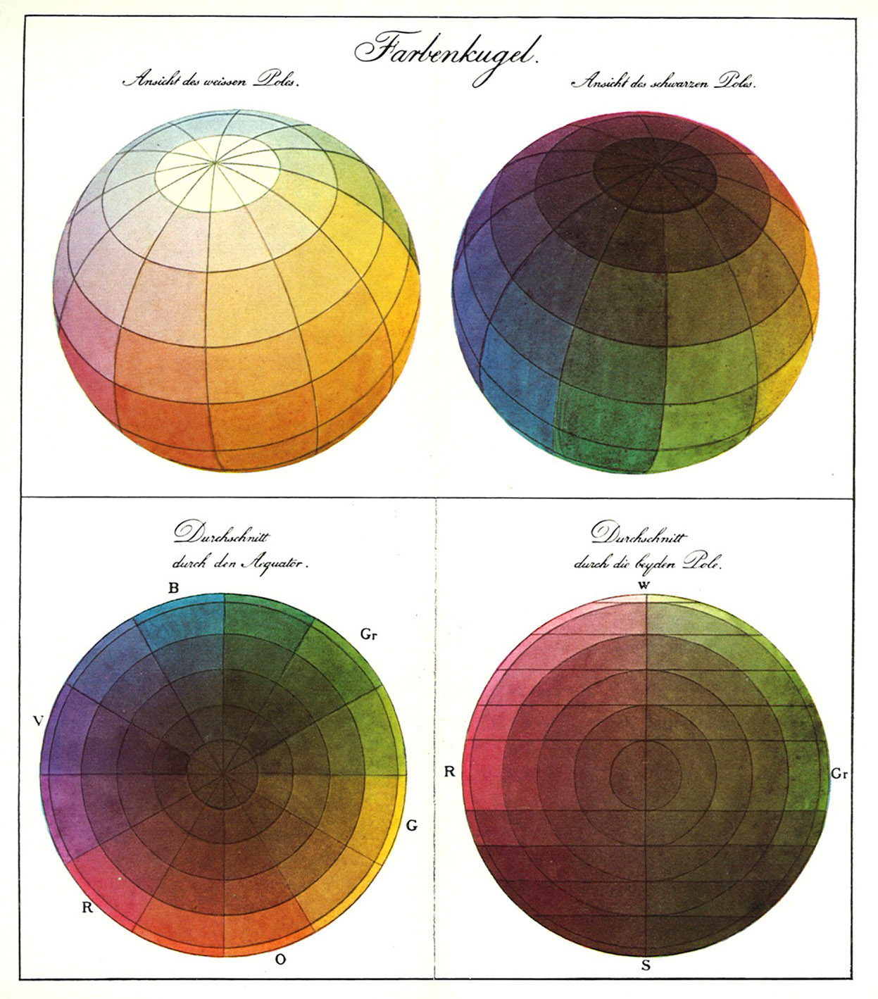
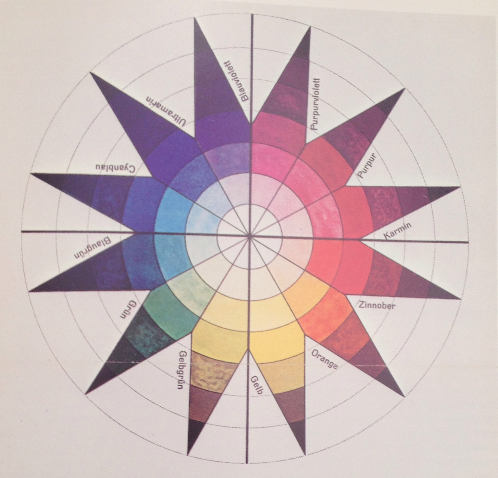
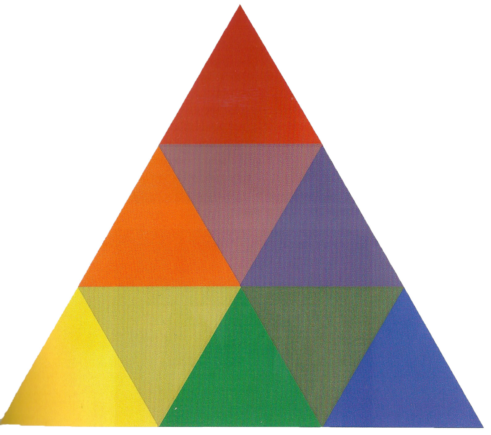

The Bauhaus is famous for its major contributions to the development of modern design and architecture. The goal of this German school of applied arts was to recreate the everyday environment in accordance with a modern aesthetic combining formal simplicity and functional logic.
Color is not usually thought to be a primary feature of the Bauhaus aesthetic but color theory and its application were taught in a variety of courses and workshops at the school. There were multiple lectures given by painters, most notably Kadinsky and Klee.
Color plays a vital role in the arts of this tradition. Yet chromatic phenomena are often elusive and difficult to analyze. In order to understand how color acts, how it functo=ions artistically, the best approach is to consult the artist’s ideas and see how they were actually implemented in paintings and other works of art and design.
There was a broad approach to color in the curriculum. Goethe and Ostwald taught the empirical investigation of color in laboratory like courses. With an emphasis on physical properties and perceptual effects, the goal of these studies was to provide objective, universal standards for the use of color in art and design. It was also investigated for its functional as well as aesthetic purposes, specifically in typographic and architectural applications.
The principles of color taught at the Bauhaus were part of language of art and design that they were trying to foster at Bauhaus. Color systems provided a sort of vocabulary, or dictionary, of chromatic elements. Emphasis was placed on the fundamental colors, the primary and the secondary hues, plus black, white, and grey. The interrelationships and ways of combining this color constituted a sort of grammer. The principles of
These factors caused chromatic alterations and effects such sas spatial illusions.
The Bauhaus teachers often used schematic models such as color circles and color spheres to show the ordered relationships within the chromatic realm. For did active purposes the visual presentations had to be clear and mnemonically effective, and thus they were like diagrams and charts, characterized by formal simplicity and usually geometric in design. This tendency, to have a quasi scientific analyzation of design elements reflects the influence of the De Stijl and Russian Constructivist movements.
Twelve colors and seven gradations. Represented as a two-dimensional start, the shape represents the exterior of a sphere. With white at the top, black at the bottom, and pure hues around the equator. Runge has the original one, and Itten drew from it and used a similar, if not identical spectrum.
Runges sphere is shown below.This is the first model 
Ittens color sphere is shown here. 
In an equilateral triangle divided into nine smaller triangles the primaries are suited at the corners and the secondaries at the sides between their parent primaries. Unlike the color circle however this figure includes the tertiary colors, produced by mixing the secondaries that lie to ether side.

Based on research in the fields of chemistry, physics, and perceptual psychology. Developed from a circle of 24 hues, the color solid shows the relationships of a total of 690 color variations for which Ostwald had a system of notation. The theory therefore, was specifically concerned with precise color measurements and classification for industrial standardization.